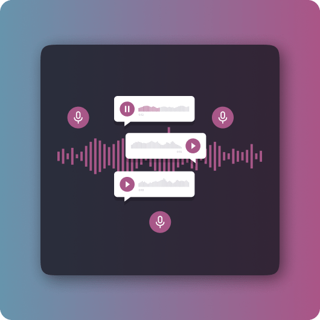
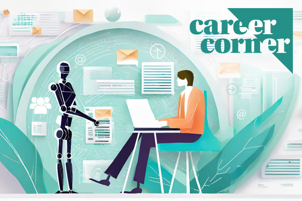

About Me
Hello! I'm a passionate student with interest in technology, Artificial Intelligence and Machine Learning. Currently pursuing my degree in Computer Science. I've worked on several projects including fake news detection using ML and other web applications.
Apart from studies I scored good as an even organizer in SICO. I'm also a Member in the college Throwball Team, Badmintion.I've also participated in several dance competions(classical),Elocutions,Literary,Group discussion and many other technical as well as non technical events. I love participating in competitions and taking on new challenges!
Skills
- Python, Java, SQL
- Machine Learning
- Web Development
- Data Analysis
Skills
- Content Strategy
- Efficient Communication
- Creativity
- Adaptability
Featured Projects



